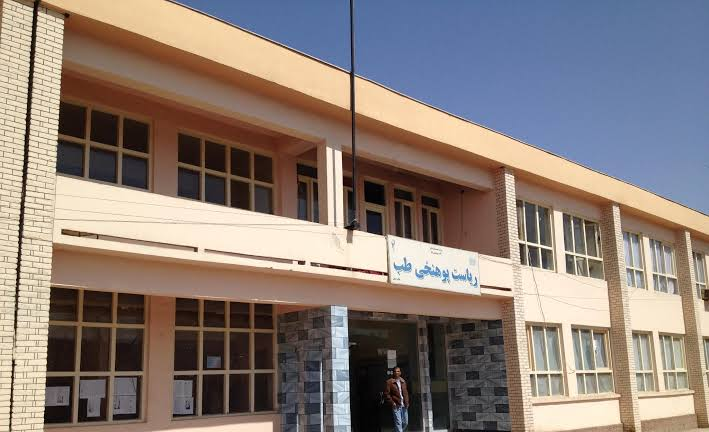
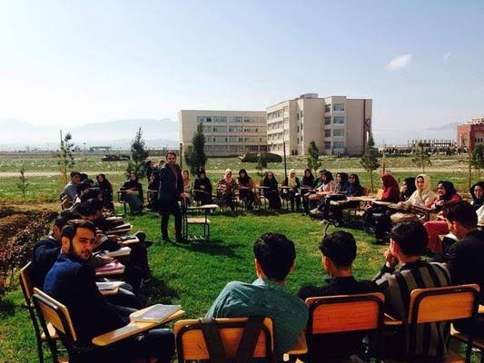
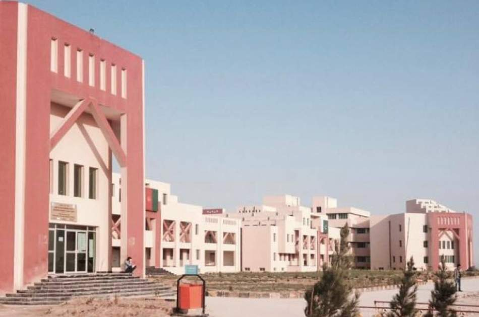

دانشکده ها
دانشگاه بلخ یکی از جمله دانشگاه های معتبر افغانستان می باشد که دارای دانشکده ها ودیپارتمنت های مختلف می باشد:
دانشکده طب
طب معالجوی، طب دندان، نرسنگی، قابلگی
 دانشکده طب دانشگاه بلخ یکی از ۱۶ دانشکده، دانشگاه بلخ است و در سال ۱۳۶۶هـ. ش تأسیس شده است . این دانشکده در
ارایه آموزش های تخصصی در رشته های مختلف طبی نقش مهمی دارد و از جمله بزرگترین دانشگاه های افغانستان به شمار می آید
بخش های مهم:
تحقیق:
این دانشکده به عنوان یک مرکز تحقیقاتی فعال عمل می کند و در زمینه های مختلف طبی، از جمله بیماری های عفونی،
سطان، دیابت و بیماری های قلبی تحقیقات انجام می دهد.
دانشکده انجنیری معادن و محیط زیست
انجنیری معدن، انجنیری پطرولیم، انجنیری آب و محیط زیست
.jpg)
ورکشاپ ها
ورکشاپ روش های علمی تحقیق به تاریخ ۱۲/۰۶/ ۱۳۹۹ در تالار کنفرانس های پوهنحی انجنیری معادن و محیط زیست توسط مسئول کمیته فرعی تحقیق، تالیف و ترجمه این پوهنحی، پوهنیار فرید احمد (محمدی) برای اساتید این پوهنحی برگزار گردید. در این و رکشاپ رئیسه صاحب این پوهنحی، اساتید دیپارتمنت های انجنیری معدن و انجنیری پطرولیم، آب و محیط زیست اشتراک نموده بودند، که شامل چهار بخش بود ، نخست سوالات تحقیقی برای ایجاد طوفان مغزی در اشتراک کنندگان مطرح شد، در بخش دوم مبادی تحقیق و روش های علمی تحقیق تشریح گردید، در بخش سوم اجزای یک طرح تحقیقی توضیح داده شدو در بخش چهارم نتیجه گیری و جمع بندی موضوعات ارائه شده صورت گرفته، به سوالات اشتراک کنندگان پاسخ ارائه شده و همچنان در مورد موضوعات مورد بحث مباحثات علمی صورت گرفت. که در نتیجه با سخنان پایانی توسط رئیس پوهنحی محترمه پوهنیار فرشته حسن هاشمی با آرزوی پیشرفتهای چشمگیر در زمینه تحقیقات علمی در افغانستان به پایان رسید.
دانشکده انجنیری ساختمانی
انجنیری ساختمانی، انجنیری صنابع کیمیاوی، انجنیری هایدرولیک
دانشکده انجنیری
دانشکده انجنیری یکی از نهادهای علمی و تخصصی مهم در ساختار دانشگاه است که با هدف تربیه انجنیران متعهد، متخصص و نوآور تأسیس گردیده است. ساختار آموزشی دانشکده به گونهای طراحی شده است که در کنار آموزش نظری، فرصتهای عملی و تجربی را از طریق لابراتوارهای مجهز، پروژههای عملی، و دورههای کارآموزی برای محصلان فراهم میسازد. اعضای کادر علمی دانشکده، متشکل از اساتید مجرب و پژوهشگران فعال، در راستای ارتقاء کیفیت آموزشی و تحقیقی فعالیت میکنند. عملکرد دانشکده انجنیری بر اساس سه محور اصلی استوار است: آموزش با کیفیت، تحقیق علمی، و خدمت به جامعه. این دانشکده با برگزاری کنفرانسها، همکاریهای علمی با نهادهای داخلی و بینالمللی، و توسعه پروژههای تحقیقاتی، نقش مهمی در پیشرفت علمی و تخنیکی کشور ایفا مینماید
دانشکده اقتصادی
مدیریت تجارت، اقتصاد ملی، BBA
.jpg)
دانشکده اقتصاد
این دانشکدهدر سال ۲۰۰۲ میلادی، این دانشکده با همکاری دانشگاه روهر بوخوم آلمان، برنامههای هماهنگی علمی را آغاز کرد. در نتیجه این همکاری، ده استاد از این دانشکده به آلمان اعزام شدند تا ظرفیت علمی خود را ارتقاء دهند. همچنین، دانشگاه روهر بوخوم متعهد به تهیه، ترج مه و نشر کتابهای درسی به زبانهای رسمی کشور (دری و پشتو) و ساخت پایگاه داده کتابخانهای الکترونیکی برای استفاده استادان و دانشجویان شد. برنامههای تحصیلی این دانشکده با سیستم اعتبارسنجی استاندارد تنظیم شدهاند و برنامه کارشناسی آن شامل ۱۴۶ اعتبار است. پس از تأسیس برنامههای تحصیلات تکمیلی با همکاری دانشگاه نوتردام ایالات متحده آمریکا، این دانشکده در رشتههای مالیه و حسابداری نیز برنامههای کارشناسی ارشد ارائه میدهد.
دانشکده کمپیوتر ساینس
انجنیری نرم افزار، IT
دانشکده کمپیوتر ساینس
دانشکده کمپیوتر ساینس دانشگاه بلخ یکی از دانشکدههای معتبر و پیشرو در حوزه علوم کمپیوتر در شمال افغانستان است. این دانشکده در سال ۱۳۹۰ هجریشمسی (۲۰۱۱ میلادی) با همکاری دانشگاه تخنیکی برلین آلمان تأسیس شد و از آن زمان تاکنون در تربیت متخصصان ماهر در زمینههای مختلف تکنالوژی معلوماتی و کمپیوتر ساینس فعالیت میکند. ساختار و برنامههای آموزشی دانشکده کمپیوتر ساینس دانشگاه بلخ با هدف ارتقاء سطح علمی و تخصصی دانشجویان در زمینههای مختلف کمپیوتر ساینس، برنامههای آموزشی خود را مطابق با استانداردهای بینالمللی طراحی کرده است. برنامههای درسی این دانشکده به سیستم کریدتبندی تنظیم شده و در چهار سال دوره لیسانس، ۲۰۰ کریدت درسی ارائه میشود. مواد درسی و کریکولم این دانشکده با همکاری اس اتید آلمانی در وزارت تحصیلات عالی تهیه شده است.
دانشکده تعلیم تربیه
ریاضی،بیولوژی، کیمیا، فزیک
.jpg)
دانشکده تعلیم تربیه
دانشکده تعلیم و تربیه دانشگاه بلخ یکی از دانشکدههای برجسته و پیشرو در حوزه آموزش و تربیت معلمان در شمال افغانستان است. این دانشکده با هدف تربیت معلمان متخصص و متعهد، نقش مؤثری در ارتقاء سطح آموزش و پرورش کشور ایفا میکند. تاریخچه و ساختار دانشکده تعلیم و تربیه دانشگاه بلخ در سال ۱۹۶۲ میلادی تحت عنوان «کالج معلمان ابتدایی» تأسیس شد. در سال ۱۹۶۹ میلادی به «کالج معلمان عالی» ارتقاء یافت و در سال ۱۹۸۶ میلادی به «مؤسسه تربیت معلم رودکی» تبدیل شد. در سال ۲۰۰۳ میلادی، این مؤسسه به دانشگاه بلخ ملحق شد و به عنوان دانشکده تعلیم و تربیه دانشگاه بلخ فعالیت خود را ادامه داد .
رنامههای آموزشی دانشکده تعلیم و تربیه دانشگاه بلخ با ارائه برنامههای آموزشی در مقاطع لیسانس و ماستر، به تربیت معلمان در رشتههای مختلف میپردازد. برنامههای درسی این دانشکده با همکاری اساتید مجرب و با استفاده از منابع آموزشی بهروز طراحی شدهاند تا دانشجویان را برای ایفای نقش مؤثر در نظام آموزشی کشور آماده سازند.ی
دانشکده زبان و ادبیات
ادبیات دری، ادبیات پشتو، ادبیات انگلیسی، ادبیات ازبکی
دانشکده ادبیات
دانشکده زبان و ادبیات دانشگاه بلخ یکی از قدیمیترین و معتبرترین دانشکدههای این دانشگاه است که نقش مهمی در تربیت متخصصان زبانشناسی، ادبیات و علوم انسانی در شمال افغانستان ایفا میکند.
تاریخچه و ساختار
این دانشکده در سال ۱۳۶۶ هجریشمسی (۱۹۸۷ میلادی) همزمان با تأسیس دانشگاه بلخ بنیانگذاری شد. در ابتدا، تنها دپارتمان زبان و ادبیات دری فعالیت میکرد، اما با توجه به نیازهای آموزشی و فرهنگی، دپارتمانهای دیگری نیز به ساختار آن افزوده شد. در سال ۱۳۹۱ هجریشمسی (۲۰۱۲ میلادی)، برنامه کارشناسی ارشد در رشته زبان و ادبیات دری نیز در این دانشکده راهاندازی شد.
مچنین، در سال ۱۴۰۲ هجریشمسی (۲۰۲۳ میلادی)، با همکاری اداره همکاری و هماهنگی ترکیه (TIKA)، دپارتمان زبان و ادبیات ترکی در این دانشکده تأسیس شد. این دپارتمان با هدف تقویت روابط فرهنگی و علمی میان افغانستان و ترکیه ایجاد شده است.
برنامههای آموزشی
دانشکده زبان و ادبیات دانشگاه بلخ برنامههای آموزشی خود را در مقاطع لیسانس و ماستری ارائه میدهد. برنامههای درسی این دانشکده با سیستم کریدتبندی تنظیم شدهاند و شامل دروس نظری و عملی در زمینههای مختلف زبانشناسی، ادبیات کلاسیک و معاصر، نقد ادبی، آموزش زبان و مهارتهای ارتباطی است.
دانشکده اداره و پالسی عامه
اداره عامه، پالسی عامه،
.jpg)
اداره و پالیسی عامه
دانشکده اداره و پالیسی عامه دانشگاه بلخ یکی از دانشکدههای پیشرفته و نوین در حوزه علوم اداری و حکمرانی در شمال افغانستان است. این دانشکده در سال ۱۳۹۰ هجریشمسی (۲۰۱۱ میلادی) با همکاری دفتر GIZ آلمان تأسیس شد و در سال ۱۳۹۱ فعالیتهای آموزشی خود را با پذیرش ۲۴۳ دانشجو آغاز کرد
ساختار و برنامههای آموزشی
دانشکده اداره و پالیسی عامه دانشگاه بلخ با هدف ارتقاء ظرفیتهای مدیریتی و حکومتی در سطوح مختلف، برنامههای آموزشی خود را مطابق با نیازهای نهادهای دولتی، بخش خصوصی، سازمانهای جامعه مدنی و نهادهای بینالمللی طراحی کرده است. برنامه کارشناسی این دانشکده با سیستم کریدتبندی ارائه میشود و دروس آن شامل مدیریت نهادهای دولتی، تدوین و ارزیابی سیاستها، مدیریت توسعه، مدیریت سازمانها و کار در نهادهای بینالمللی است. دانشجویان علاوه بر آموزشهای نظری، تجربه عملی لازم را برای انجام کارهای اداری پس از فارغالتحصیلی کسب میکنند.
امکانات و دستاوردها
دانشکده اداره و پالیسی عامه دانشگاه بلخ در ابتدا با تعداد محدودی صنف درسی و دفتر کار آغاز به کار کرد. اما در ۱۷ میزان ۱۳۹۳، ساختمان جدید این دانشکده در پردیس جدید دانشگاه با امکانات عالی و فضای آموزشی مناسب که با کمک مالی آلمان ساخته شده بود، به بهرهبرداری رسید .